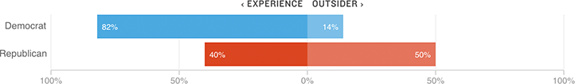

Democratic and Republican Voters Have Vastly Different Priorities
Early exit polls showed a wide difference between Democrats and Republicans on whether they wanted a candidate to “have experience” or to “be an outsider.”
